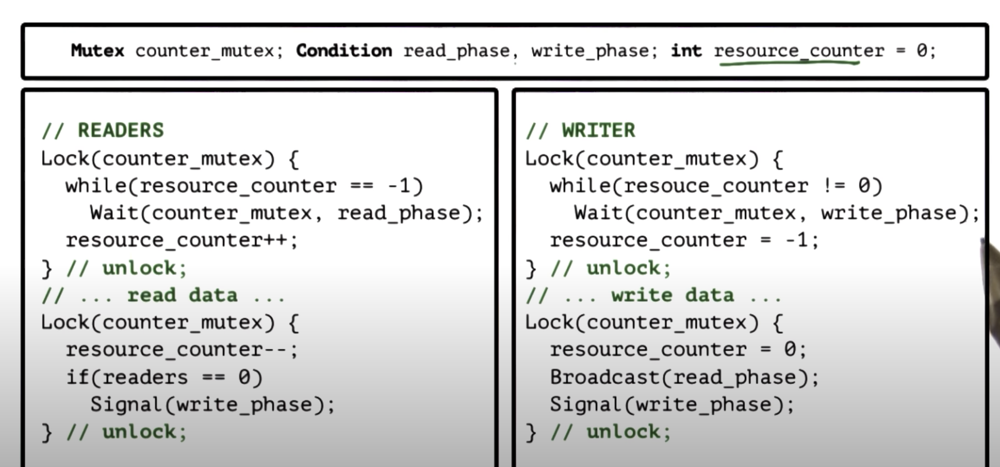
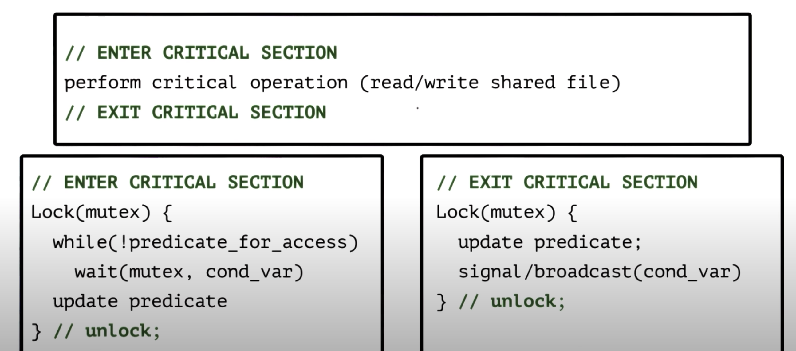

Readings
Birrell, Andrew, An Introduction to Programming with Threads.
Paper Summary credit to: christian.thompson@gatech.edu
Threads and Concurrency
Process vs Thread
Process has its own address space and execution context where threads share the same address space, each thread still has its own execution context.
Benefits of Multithreading
- Parallelization of the tasks (on multiple CPUs) achieves speed up
- Specialization of the tasks can results in execution with hotter cache
- Less memory intensive compare to splitting the application into different processes
- More efficient in communication (cheaper IPC)
In a single CPU setup, multithreading can still be value considering when one task is idle and we can context switch to another task as long as the idle time is less than 2 * context switching time
Note that context switching within threads is much less expansive than context switching between processes. This is because context switch in threads doesn't need to recreate new virtual to physical mappings.
Thread Mechanism
Thread Data structure
Create and Manage Threads
Thread Type: Thread data structure which contains thread ID, PC, SP, registers, stack, attributes
Fork(proc, args): This is not a unix fork which creates a new process, fork in this context creates a new thread
Join(thread): terminates a thread, all the resources of the thread will be freed
Mutual Exclusion
Birrell's Lock API
Lock(m) {
// critical section
} // unlock;
Common Thread API
lock(m);
// critical section
unlock(m);
Coordinate Threads
Synchronization Mechanism
- Mutual Exclusion: exclusive access to only one thread at a time. This is achieved with mutex.
- Waiting on other threads: specific condition before proceeding using condition variable
Conditional Variable
Condition type Wait(mutex, cond): mutex is automatically released and re-acquired on wait Signal(cond): notify only one thread waiting on condition Broadcast(cond): notify all waiting threads
Readers / Writer Problem
0 or more readers can access the resource at the same time 0 or 1 writer can access the resource at the same time reader and writer cannot access the resource at the same time
Mutex can be applied but it's too restrictive since it only has two states. This is fine for writer but we want to allow 0 or more readers to access resource at the same time
We need a lock that can represent the following logic
if ((read_counter == 0) and (write_counter == 0))
Read_ok
Write_ok
if (read_counter > 0)
Read_ok
if (write_counter == 1)
Read_no
Write_no
Therefore state of the shared resource can be encoded as: Free: resource_counter = 0 Reading: resource_counter > 0 Writing: resource_couner = -1
We then use a mutex to protect this resource_counter variable, the actual read or write operation does not have to be within the lock. Below is pseudo code of this implementation.

A more generalized implementation

Common Pitfalls
- keep track of mutex and condition variables used with a resource
- check that always using lock and unlock
- use a single mutex to access a single resource
- check if signaling the correct condition
- check that not using signal when broadcast is needed (opposite of this is ok)
- check if need priority guarantee
Multithreading Models
One-to-One Model
User thread is mapped to a kernel thread. This approach OS sees and understands the threads and provide supports for synchronization, blocking and etc. The downside of this is user threads must go to OS for all operations which might be expansive and OS may have limits on policies, thread numbers and portability.
Many-to-One Model
All user threads are mapped to one kernel thread, user thread manager will decide which thread to be mapped to kernel thread. This approach supports portability (not limited by OS limits and polices) and don't need to make system call. Downside is that OS has no insights into applications needs, it may block entire process if one user level thread blocks on I/O.
Many-to-Many Model
Combination of the above models. Complexity comes in as this model requires coordination between user and kernel level thread managers
Multithreading Patterns
Boss / Workers Pattern
Boss: assign work to workers, boss places work in producer/consumer queue. Worker: performs entire task, they don't need to sync with other workers.
Decide number of workers: on demand: not efficient pool of workers: static or dynamic
Variants: Workers specialized for certain tasks, this provides better locality but load balancing for each task will be more challenging
Pipeline Pattern
Threads assigned are subtask in the system. Entire tasks construct the pipeline of threads.Throughput of this pattern is the weakest link. Each stage should have its thread pool and Shared buffer/ queue based thread manager can be use to manage communication between stages.
This model supports specialization and locality, downside is balancing and sync overheads.
Layered Pattern
Group related subtasks into different layers, end-to-end tasks must pass up and down through all layers. This allows specialization and less fine-grained than pipeline. However, this pattern might not be suitable for all application and sync is more complicated.
PThreads
PThreads stands for POSIX threads and POSIX stands for Portable Operating System Interface.
PThread Creation
Similar to Birrell's Mechanisms:
Data structure: pthread_t aThread;
Fork: int pthread_create(pthread_t *thread, const pthread_attr_t *attr, void * (*start_routine)(void *), void *arg));
Join: int pthread_join(pthread_t thread, void **status);
Pthread Attributes
pthread_attr_t
– specified in pthread_create
– defines features of the new thread:
– stack size
– inheritance
– joinable
– scheduling policy
– priority
– system/process scope
– has default behavior with NULL in pthread_create
Compiling Threads
#include <pthread.h>- compile source with
-lpthreador-pthread. For example,gcc -o main main.c -lpthread - check return values of common functions
PThread Mutexes
Mutex: pthread_mutex_t aMutex;
Lock(mutex): int pthread_mutex_lock(pthread_mutex_t *mutex);
int pthread_mutex_unlock(pthread_mutex_t *mutex);
Mutex init: int pthread_mutex_init(pthread_mutex_t *mutex, const pthread_mutexattr_t * attr);
Trylock: int pthread_mutex_trylock(pthread_mutex_t *mutex);
Mutex destroy: int pthread_mutex_destroy(pthread_mutex_t *mutex);
Mutex Safety Tips
- Shared data should always be accessed through a single mutex
- Mutex scope must be visible to all threads
- Globally order locks, for all threads, lock mutexes in order
- Always unlock a mutex, unlock the correct mutex
Pthread Condition Variables
Condition: pthread_cond_t aCond;
Wait: int pthread_cond_wait(pthread_cont_t *cond, pthread_mutex_t *mutex)
Signal: int pthread_cond_signal(pthread_cond_t *cond);
Broadcast: int pthread_cond_broadcast(pthread_cond_t *cond);
Condition init: int pthread_cond_int(pthread_cond_t *cond, const pthread_condattr_t *attr);
Condition destroy: int pthread_cond_destroy(pthread_cond_t *cond);
Condition Variables Safety Tips
- Don't forget to notify waiting threads. When predicates change, signal/broadcast correct condition variable.
- When in doubt use broadcast (performance loss)
- Do not need a mutex to signal or broadcast
Producer and Consumer Example
#include <stdio.h>
#include <stdlib.h>
#include <pthread.h>
#define BUF_SIZE 3 /* Size of shared buffer */
int buffer[BUF_SIZE]; /* shared buffer */
int add = 0; /* place to add next element */
int rem = 0; /* place to remove next element */
int num = 0; /* number elements in buffer */
pthread_mutex_t m = PTHREAD_MUTEX_INITIALIZER; /* mutex lock for buffer */
pthread_cond_t c_cons = PTHREAD_COND_INITIALIZER; /* consumer waits on this cond var */
pthread_cond_t c_prod = PTHREAD_COND_INITIALIZER; /* producer waits on this cond var */
void *producer (void *param);
void *consumer (void *param);
int main(int argc, char *argv[]) {
pthread_t tid1, tid2; /* thread identifiers */
int i;
/* create the threads; may be any number, in general */
if(pthread_create(&tid1, NULL, producer, NULL) != 0) {
fprintf(stderr, "Unable to create producer thread\n");
exit(1);
}
if(pthread_create(&tid2, NULL, consumer, NULL) != 0) {
fprintf(stderr, "Unable to create consumer thread\n");
exit(1);
}
/* wait for created thread to exit */
pthread_join(tid1, NULL);
pthread_join(tid2, NULL);
printf("Parent quiting\n");
return 0;
}
/* Produce value(s) */
void *producer(void *param) {
int i;
for (i=1; i<=20; i++) {
/* Insert into buffer */
pthread_mutex_lock (&m);
if (num > BUF_SIZE) {
exit(1); /* overflow */
}
while (num == BUF_SIZE) { /* block if buffer is full */
pthread_cond_wait (&c_prod, &m);
}
/* if executing here, buffer not full so add element */
buffer[add] = i;
add = (add+1) % BUF_SIZE;
num++;
pthread_mutex_unlock (&m);
pthread_cond_signal (&c_cons);
printf ("producer: inserted %d\n", i);
fflush (stdout);
}
printf("producer quiting\n");
fflush(stdout);
return 0;
}
/* Consume value(s); Note the consumer never terminates */
void *consumer(void *param) {
int i;
while(1) {
pthread_mutex_lock (&m);
if (num < 0) {
exit(1);
} /* underflow */
while (num == 0) { /* block if buffer empty */
pthread_cond_wait (&c_cons, &m);
}
/* if executing here, buffer not empty so remove element */
i = buffer[rem];
rem = (rem+1) % BUF_SIZE;
num--;
pthread_mutex_unlock (&m);
pthread_cond_signal (&c_prod);
printf ("Consume value %d\n", i); fflush(stdout);
}
return 0;
}